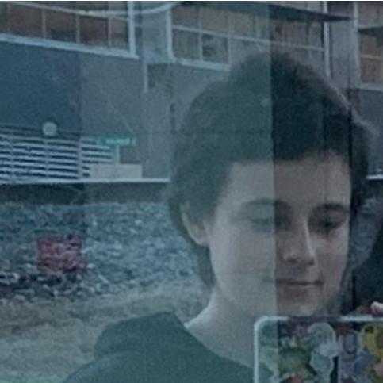

whoa mama, it's us
Freya Rygalski

Freya Rygalski created Lepsius along with W.K. in December 2023. Interestingly, though being the band's drummer, Freya did not
know how to play them initially, learning to do so because no one else wanted to, later leaving in August of the same year.
Phoebe Johnson

Phoebe Johnson joined on bass in late 2023, but was quickly forced to pick up singing, songwriting, and bandleading too. Phoebe's
unusal method of doing ... everything, gives Lepsius its strange whimsical qualities.
Wren Kennison

Wren Kennison created Lepsius with F.R.
Originally playing keyboard, Wren was quickly forced to figure out
guitar after witnessing a fellow keyboardist being beaten by a rival band.
Additional Members
Miles Rumsey

Miles Rumsey filled in on drums for us for our December 24 show with the Obliques. Learning all of our songs in only two days, Miles is
a homie for real for real.
I also have zero photos of him, other than this enhanced still from a video Jackson took of us.
Boris Johnson

Boris is an adorable creature. Joining in early 2024, he is our temporary snare drum player.
Dido Johnson

Dido is an adorable critter. Joining in June 2025, she is our temporary bass drum player.